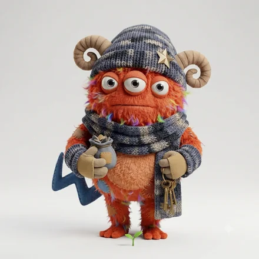

monster type
ISTP-A-C孤高の手さばきモンスター
手を動かしながら、原理をつかむ人
モンスター名は、6軸の組み合わせにつけた分類名です。軸ごとの表現ではありません。
ISTP-A-C とは
ISTP-A-C（ISTP-AC／ISTP AC とも書かれます）は、64タイプ性格診断のうちの1つです。ISTPの4文字に、自分への確信を表すA（確信）と、人への構えを表すC（慎重）が重なります。64モンスターズでは「孤高の手さばきモンスター」と呼んでいます。
説明より実物、議論より試作。触って動かすことで理解を深めます。無駄を嫌い、必要なことだけを最短距離でやります。感情の言語化は不得手ですが、いざというとき最も冷静です。
必要なことだけを、誰にも相談せずに片づけるタイプ。判断に迷いがなく、人にも簡単には頼らないので、ひとりで完結する速度が際立ちます。トラブルの切り札になりますが、何をどう直したのかは、本人以外に誰も知りません。
ISTP-A-C はこんな人
実在の人物ではなく、よく見かける役割と場面で書いています。
- 必要なことだけを、誰にも相談せずに片づける人
- トラブルの切り札になる人
- 何をどう直したのかを、本人以外は誰も知らない人
ISTP-A-C あるある
- ひとりで完結する速度が、とにかく速い
- 相談されるのは平気だが、相談はしない
- 説明を求められると、なぜ必要なのかが分からない
- 直したあとに、報告を忘れる
- 群れないので、評価されにくい
当たっているかどうかは、実際に受けてみるのがいちばん早いです。
全部が当たるとは限りません。6軸の組み合わせから見た傾向です。
4つのサブタイプの中での位置


同じ基本タイプでも、自分への確信（A / O）と人への構え（H / C）で現れ方が変わります。
強みと、気をつけたいところ
ここは基本タイプ（ISTP）に共通する性質です。
強み
- トラブル対応が速く、実地に強い
- 道具や仕組みを自分で最適化できる
- 緊急時にも動じない
気をつけたいところ
- 長期の計画や報告を面倒に感じる
- 気持ちの共有を求められると距離を取る
- 興味を失うと、途端に手が止まる
ISTP-A-C ならでは
このタイプの強み
誰も手を出せない状況で、ひとりだけ冷静に手が動く。壊れた場面でいちばん頼りになります。
落とし穴
共有がないので、同じ問題が別の場所で繰り返される。直したあとに一言だけ経緯を残すと、影響範囲が一気に広がります。
恋愛での ISTP-A-C
ひとりの時間を保ったまま、必要なときだけ深く関わります。関わる回数は少なく、確かです。
かみ合う相手
距離を尊重できる相手。常に一緒でなくていい人となら、この関係は無理なく続きます。
気をつけたいところ
何も言わないので、関心がないと受け取られる。やったことを一度だけ言葉にしてください。
仕事での適性
力を発揮する環境
実物と裁量があり、手順に縛られすぎない環境
向いている役割
実装、修理・改善、現場対応、専門技能
トラブル対応の切り札。共有の一手間で影響範囲が広がる。
相性
恋人・仕事・友人で、噛み合う相手は変わります。6軸の重みづけから計算した順位です。数字は測定値ではありません。
恋人としてかみ合う相手
 ISTP-O-C寡黙な手さばきモンスター100
ISTP-O-C寡黙な手さばきモンスター100 INTP-O-C閉じこもる分解モンスター88
INTP-O-C閉じこもる分解モンスター88 ESTP-O-C読み切る瞬発モンスター88ISTP-A-C同じタイプ孤高の手さばきモンスター88
ESTP-O-C読み切る瞬発モンスター88ISTP-A-C同じタイプ孤高の手さばきモンスター88 ISFP-O-C秘める感性モンスター81
ISFP-O-C秘める感性モンスター81この用途では「外界への構えが同じ」と「判断の基準が同じ」ことを最も重く見ています。
仕事のパートナーとして組みやすい相手

ENFP-O-C内省する火つけモンスター100 INFP-O-C沈黙の空想モンスター93
INFP-O-C沈黙の空想モンスター93 ENTP-O-C静かに企てる突破モンスター86
ENTP-O-C静かに企てる突破モンスター86 ENFP-O-H揺れる火つけモンスター86INTP-O-C閉じこもる分解モンスター79
ENFP-O-H揺れる火つけモンスター86INTP-O-C閉じこもる分解モンスター79この用途では「情報の受け取り方が違う」と「外界への構えが同じ」ことを最も重く見ています。
友人として続きやすい相手
ISFP-O-C秘める感性モンスター100ISTP-O-C寡黙な手さばきモンスター92 ISFP-A-C静謐な感性モンスター92
ISFP-A-C静謐な感性モンスター92 ISFJ-O-C内に抱えるお世話モンスター92ISTP-A-C同じタイプ孤高の手さばきモンスター83
ISFJ-O-C内に抱えるお世話モンスター92ISTP-A-C同じタイプ孤高の手さばきモンスター83この用途では「情報の受け取り方が同じ」と「エネルギーの向きが同じ」ことを最も重く見ています。
よくある質問
ISTP-A-Cとはどんなタイプですか？
ISTP-A-Cは「孤高の手さばきモンスター」です。手を動かしながら、原理をつかむ人というISTPの性質に、自分への確信がA（確信）、人への構えがC（慎重）の組み合わせが重なります。必要なことだけを、誰にも相談せずに片づけるタイプ。判断に迷いがなく、人にも簡単には頼らないので、ひとりで完結する速度が際立ちます。トラブルの切り札になりますが、何をどう直したのかは、本人以外に誰も知りません。
ISTP-A-Cと相性がいいタイプは？
用途によって変わります。恋人として噛み合うのはISTP-O-C、INTP-O-C、ESTP-O-C、仕事のパートナーとしてはENFP-O-C、INFP-O-C、ENTP-O-C、友人としてはISFP-O-C、ISTP-O-C、ISFP-A-Cが上位です。6つの軸それぞれに「一致が効くか、違いが効くか」を用途別に重みづけして、64タイプを順位づけしています。同じタイプ同士も相手として数えています。
ISTP-A-Cの「A」と「C」は何を表していますか？
Aは自分への確信の軸で、確信＝自分の判断を疑わず、迷いが短いという意味です。Cは人への構えの軸で、慎重＝見きわめてから、距離を縮めるという意味です。同じISTPでも、この2文字が変わると現れ方が変わります。
ISTP-A-Cは「ISTP-AC」や「ISTP AC」と同じですか？
同じものです。ISTP-A-C・ISTP-AC・ISTP AC・ISTP A C は、いずれも同じ組み合わせを指します。区切り方はサービスや記事によって異なります。
この診断は、回答時点での自己認識を6つの軸で整理したものです。人の性格は状況や時期によって変わります。
MBTI®は Myers & Briggs Foundation, Inc. の米国およびその他の国における商標または登録商標です（日本での登録名義：MBTI Trust, Inc.）。64モンスターズは同財団および関連団体・関連会社とは一切関係がなく、公式のMBTI®アセスメントではありません。ここでいう4文字は、一般に広まった16タイプの表記を指しています。
© 2026 WONDER BROTHERS INC. All rights reserved.